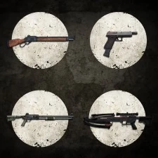

Набор тактического оружия
Набор тактического оружия

Набор тактического оружия — загрузочный материал, добавляющий в режим
«Противостояние» набор оружия, а именно:
Данный набор можно приобрести за 149 рублей. Каждое оружие можно купить отдельно, за 49 рублей.
- Винчестер
- Автоматический пистолет
- Боевой дробовик
- Арбалет
Данный набор можно приобрести за 149 рублей. Каждое оружие можно купить отдельно, за 49 рублей.
Основная информация
Вооружите свой клан выживших четырьмя единицами неподражаемого оружия для режима «Противостояние» игры «Одни из нас».
Выслеживайте жертву по кровавым следам, ранив ее выстрелом из арбалета, наносите мощный урон на средний дистанции из боевого дробовика, стреляйте короткими очередями из автоматического пистолета или уничтожайте врагов двумя выстрелами из мощного винчестера.